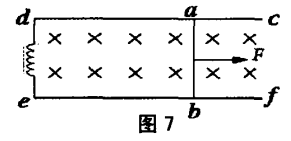
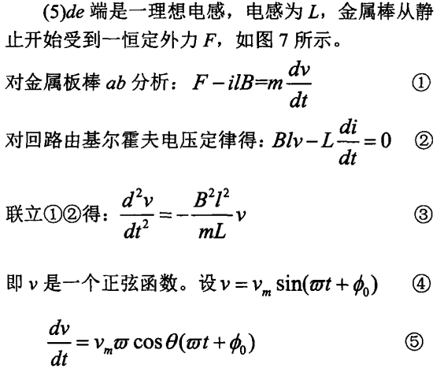
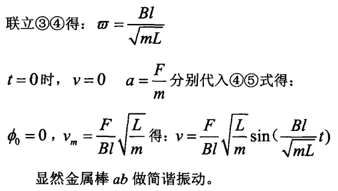
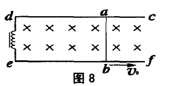
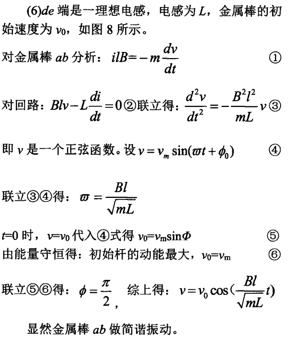

含电感和外力的金属棒运动分析

假设金属棒在磁场中切割磁感线，同时电路中含有电感 L ，其电阻为 R，并且施加了外力 F。忽略其他电阻和一切摩擦，我们的目标是求解金属棒的速度 v(t) 随时间的变化规律。
1. 电路方程
根据法拉第电磁感应定律，金属棒切割磁感线产生感应电动势 \mathcal{E}，其大小为： \mathcal{E} = B l v 其中： B 是磁场强度， l 是金属棒的长度， v 是金属棒的速度。
电流 i(t) 将根据感应电动势以及电感 L 和电阻 R 变化，因此电路方程为： B l v = L \frac{di}{dt} + R i 这里，电感 L 控制电流变化率，电阻 R 与电流大小相关。
2. 动力学方程
金属棒在磁场中切割磁感线时会受到安培力 F_{\text{Ampere}}，该力的大小为： F_{\text{Ampere}} = B l i 根据牛顿第二定律，金属棒受到的总力将使其加速： m \frac{dv}{dt} = F - B l i 其中 m 是金属棒的质量，F 是外部施加的力。
3. 消去 i(t) 并求解微分方程
3.1 从电路方程得到 \frac{di}{dt}
从电路方程： B l v = L \frac{di}{dt} + R i 解得 \frac{di}{dt}： \frac{di}{dt} = \frac{B l}{L} v - \frac{R}{L} i
3.2 对动力学方程求一次导
m\frac{d^2v}{dt}=-Bl\frac{di}{dt}
将 \frac{di}{dt} 代入上式： m \frac{d^2v}{dt} = -B l (\frac{B l}{L} v - \frac{R}{L} i) 得到关于v的二阶微分方程： m \frac{d^2v}{dt} = - \frac{(B l)^2}{L} v +\frac{Bli\cdot R}{L} 结合动力学方程，得到：
Bli = F-m\frac{dv}{dt}
代入上式二阶微分方程，得到： m \frac{d^2v}{dt} +\frac{mR}{L}\frac{dv}{dt}+\frac{B^2l^2}{L}v=\frac{RF}{L}
3.3 这是二阶非齐次常微分方程：
m \frac{d^2v}{dt^2} + \gamma \frac{dv}{dt} + \beta v = F' 其中：
\gamma = \frac{R m}{L}
\beta = \frac{(B l)^2}{L}
F'=\frac{RF}{L}
4. 求解二阶微分方程
4.1 齐次方程解
齐次方程为： m \frac{d^2 v}{dt^2} + \gamma \frac{dv}{dt} + \beta v = 0 特征方程为： m \lambda^2 + \gamma \lambda + \beta = 0 解得特征根 \lambda_1 和 \lambda_2。
齐次解为： v_h(t) = C_1 e^{\lambda_1 t} + C_2 e^{\lambda_2 t}
4.2 非齐次方程解
非齐次方程的特解为常数解： v_p = \frac{F'}{\beta} = \frac{RF}{B^2l^2}
4.3 总解
总解为齐次解与特解的和： v(t) = v_h(t) + v_p = C_1 e^{\lambda_1 t} + C_2 e^{\lambda_2 t} + \frac{R F}{B^2l^2}
5. 初始条件
通过初始条件 v(0) = v_0 和 \frac{dv}{dt}(0) = a_0，我们可以求得常数 C_1 和 C_2，从而得到完整的速度表达式。
6. 稳定速度
当 t \to \infty，金属棒将达到稳定速度： v_{\text{steady}} = \frac{R F}{B^2 l^2}
7. 速度随时间变化
在时间的初期，金属棒的速度会逐渐接近稳定速度，且在过渡阶段，速度的变化可能呈现指数衰减或者振荡衰减的形式，具体取决于系统的阻尼情况。
特殊情况：若忽略电感电阻，令R=0
1.从求解结果来看
则
\gamma=0
F'=0
则二阶微分方程变为: m \frac{d^2v}{dt^2} + \beta v = 0
它的解为正弦或者余弦函数:
v=v_m sin(\omega t+\phi_0) 其中, \omega=\frac{Bl}{\sqrt{mR}}, 其他参数需要根据初始条件确定。因此金属棒做简谐运动。
2.重新看电路方程和动力学方程
Blv=L\frac{di}{dt}
转化下:
Blv dt = Ldi
积分，若结合初始条件$t=0,i=0$
i=\frac{Bl}{L}x
金属棒所受合力大小:
F_合=F-Bil=F-\frac{B^2l^2}{L}x=-\frac{B^2l^2}{L}（x-\frac{FL}{B^2l^2}）
这正是简谐运动合力与位置的关系。
离平衡位置最远位置可以结合弹簧振子弹性势能与振子动能相互转化计算。
其中
k=\frac{B^2l^2}{L^2}
x_0=\frac{FL}{B^2l^2}
总结
通过电路方程和动力学方程，我们最终得到了一个包含外力 F 的二阶线性微分方程。解这个方程后，我们可以得到金属棒的速度随时间的变化规律。
例题1


例题2


部分内容参考自钟小平主编《更高更妙的高中物理解题思想与方法-高考物理压轴题重难点突破》